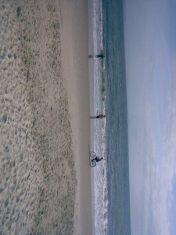

Acomodar imágenes con GQView
Algunas cámaras de fotos tienen un dispositivo que detecta su posición, entonces si sacamos una foto con la cámara posicionada verticalmente, la imagen resultante es más alta que ancha. Lo mismo sucede en el caso contrario, si se saca una foto con la cámara en forma horizontal, la imagen resultante será más ancha que alta.
Esto parece bastante bueno. Lamentablemente muchos dispositivos (cómo los celulares) no vienen equipados con este dispositivo y todas las fotos terminan siendo, por ejemplo, más altas que anchas. Otra cosa a tener en cuenta es que la mencionada funcionalidad no funciona del todo bien en todas las cámaras. Si bien en el siguiente caso es algo apropiado:
{kind=link}
En este no lo es:
 Y nos interesa convertirla en:
{kind=link}

El problema crece cuando sacamos muchas fotos[0]. Ya sea para compartirlas en Internet o para guardarlas en nuestra computadora queremos que estén posicionadas correctamente. En GNU/Linux es fácil rotar una imagen, el comando convert de ImageMagic, por ejemplo, lo hace en un instante. Si tenemos muchas imágenes a retocar, podemos hacer un script que recorra una lista de archivos y sobre todos realice el proceso. Pero en la mayoría de los casos no será tan simple. Querremos modificar algunas imágenes, pero querremos que otras se mantengan en su posición original. Lo ideal es utilizar un visualizador de imágenes y cada vez que encontramos una cuya posición queremos rotar, indicarle esto a visualizador para que la imagen sea rotada definitivamente.
GQview viene preparado para hacer esto, utilizando el comando jpegtrans. No tenía instalado este programa en mi computadora, pero pude editar la configuración del software para que ejecute mis comandos personalizados.

En Editar/Preferencias... solapa Editores podemos especificar una secuencia de comandos para ser ejecutados al elegir una opción del menú:
{kind=link}
Completé las filas 7 y 8 con los siguientes valores:
Rotar imagen (sentido horario) - convert -rotate 270 %p %p
Rotar imagen (antihorario) - convert -rotate 90 %p %p
Ahora cuando estoy visualizando imágenes y encuentro alguna mal orientada, simplemente tengo que apretar Ctrl-7 u Ctrl-8 para ajustarla.
{kind=link}
[0] en mi caso unas 1000, en mi viaje a Brasil.
Comentarios
Comments powered by Disqus